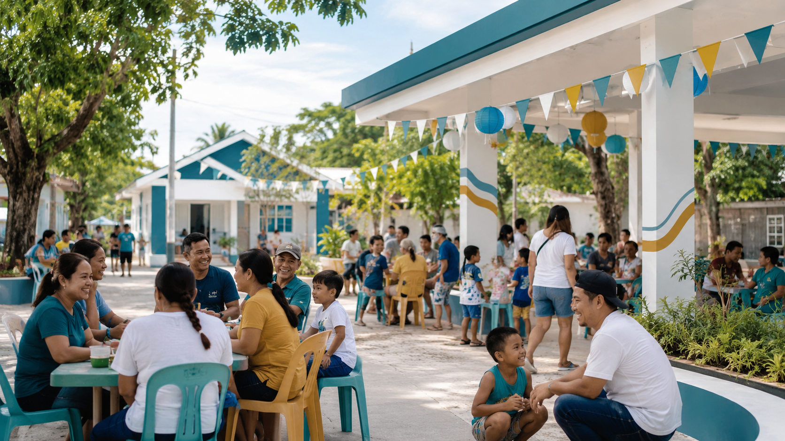

About Barangay Bolbok
Learn about the history, profile, mission, vision, and community of Barangay Bolbok.
Barangay History
Barangay Bolbok is one of the 109 barangays of Batangas City, located in the province of Batangas in the Calabarzon Region. The name "Bolbok" is derived from the Filipino/Tagalog word bulbok, meaning to bubble up or to spring forth, referring to the natural spring water that once served as an important source of freshwater for the community.
According to local history, the name came from the phrase "pagbulbok ng tubig," describing the springing of water from the ground. This story became part of the barangay's identity and continues to symbolize renewal, vitality, service, and community life.

Mission
To provide responsive, transparent, and inclusive public service that supports the welfare, safety, and development of every resident of Barangay Bolbok.
Vision
A peaceful, progressive, healthy, and united Barangay Bolbok where residents actively participate in community development.
Barangay Profile
Key facts and details about Barangay Bolbok, Batangas City, Batangas.
Location Overview
Barangay Bolbok is part of Batangas City, Batangas and serves residents through local governance, public assistance, peace and order programs, and community services. Land Area: 249.4780 ha | 7 Puroks.